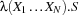

| << Prev | - Up - | Next >> |
We have already seen some basic statements in Oz. Introducing new variables and sequencing of statements:
S1 S2
Reiterating again, a thread executes statements in a sequential order. However a thread, contrary to conventional languages, may suspend in some statement, so above, a thread has to complete execution of S1, before starting S2. In fact, S2 may not be executed at all, if an exception is raised in S1.
The statement skip is the empty statement.
Oz provides a simple form of conditional statement having the following form:
if B thenS1elseS2end
B should be a Boolean value.
If B is bound to true S1 is executed
if B is bound to false S2 is executed
if B is bound to an non-boolean value, an exception is raised
otherwise if B is unbound the thread suspends until one of the cases above applies
Comparison Procedures
Oz provides a number of built-in tertiary procedures used for comparison. These include == that we have seen earlier as well as \=, =<, <, >=, and >. Common to these procedures is that they are used as Boolean functions in an infix notation. The following example illustrates the use of an If-statement in conjunction with the greater-than operator >.
In this example Z is bound to the maximum of X and Y, i.e. to Y:
local X Y Z in
X = 5 Y = 10
if X >= Y then Z = X else Z = Y end
endFigure 5.1: Using a if statement
A statement using the keyword elseif:
ifB1thenS1elseifB2thenS2elseS3end
is shorthand for nested if-statements:
ifB1thenS1B2
else ifthenS2S3
elseend
end
An if-statement missing the else part:
ifB1thenS1end
is equivalent to:
ifB1thenS1else skip end
Procedure definition is a primary abstraction in Oz. A procedure can be defined, passed around as argument to another procedure, or stored in a record. A procedure definition is a statement that has the following structure.
proc {P X1 ... Xn} S end
Assume that the variable P is already introduced; executing the above statement will:
create a unique closure which is essentially a uniquely named lambda expression 
The variable P is bound to the closure.
A procedure in Oz has a unique identity, given by its unique closure, and is distinct from all other procedures. Two procedure definitions are always different, even if they look similar. Procedures are the first Oz values that we encounter, whose equality is based on name equality. Others include threads, cells, and chunks.
In general, the statement S in a procedure definition will have many variable occurrences. A variable that occurs textually in a statement is called an identifier to distinguish it from the logic variable that is a data structure created at runtime. Some identifier occurrences in S are syntactically bound while others are free. An identifier occurrence X1 in S is bound if it is in the scope of the procedure formal-parameter X, or is in the scope of a variable introduction statement that introduces X. Otherwise, the identifier occurrence is free. Each free identifier occurrence in a program is eventually bound by the closest textually surrounding identifier-binding construct.
We have already seen how to apply (call) a procedure. Let us now show our first procedure definition. In Figure 5.1, we have seen how to compute the maximum of two numbers or literals. We abstract this code into a procedure.
local Max X Y Z in
proc {Max X Y Z}
if X >= Y then Z = X else Z = Y end
end
X = 5
Y = 10
{Max X Y Z} {Browse Z}
end
One could ask why a variable is bound to a procedure in a way that is different from it being bound to a record, e.g. X = f(...)? The answer is that what you see is just a syntactic variant of the equivalent form
P = proc {$ X1 ... Xn} S end
The R.H.S. defines an anonymous procedural value. This is equivalent to
proc {P X1 ... Xn} S end
In Oz, we can initialize a variable immediately while it is being introduced by using a variable-initialization equality
X = <Value>or
<Record> = <Value>
between local and in, in the statement local ... in ... end. So the previous example could be written as follows, where we also use anonymous procedures.
local
Max = proc {$ X Y Z}
if X >= Y then Z = X
else Z = Y end
end
X = 5
Y = 10
Z
in
{Max X Y Z} {Browse Z}
end
Now let us understand variable initialization in more detail. The general rule says that: in a variable-initialization equality, only the variables occurring on the L.H.S. of the equality are the ones being introduced. Consider the following example:
local
Y = 1
in
local
M = f(M Y)
[X1 Y] = L
L = [1 2]
in {Browse [M L]} end
end
First Y is introduced and initialized in the outer local ... in ... end. Then, in the inner local ... in ... end all variables on the L.H.S. are introduced, i.e. M, Y, X1, and L. Therefore the outer variable Y is invisible in the innermost local ... end statement. The above statement is equivalent to:
local Y in
Y = 1
local M X1 Y L in
M = f(M Y)
L = [X1 Y]
L = [1 2]
{Browse [M L]}
end
end
If we want Y to denote the variable in the outer scope, we have to suppress the introduction of the inner Y in the L.H.S. of the initializing equality by using an exclamation mark ! as follows. An exclamation mark ! is only meaningful in the L.H.S. of an initializing equality 2.
local
Y = 1
in
local
M = f(M Y)
[X1 !Y] = L
L = [1 2]
in {Browse [M L]}
end
end
Let us consider a very simple example: insertion of elements in a binary tree. A binary tree is either empty, represented by nil, or is a tuple of the form tree(Key Value TreeL TreeR), where Key is a key of the node with the corresponding value Value, and TreeL is the left subtree having keys less than Key, and TreeR is the right subtree having keys greater than Key. The procedure Insert takes four arguments, three of them are input arguments Key, Value and TreeIn, and one output argument TreeOut to be bound to the resulting tree after insertion.
The program is shown in Figure 5.2. The symbol ? before TreeOut is a voluntary documentation comment denoting that the argument plays the role of an output argument. The procedure works by cases as obvious. First depending on whether the tree is empty or not, and in the latter case depending on a comparison between the key of the node in the tree and the input key. Notice the use of if ... then ... elseif ... else ... end with the obvious meaning.
proc {Insert Key Value TreeIn ?TreeOut}
if TreeIn == nil then TreeOut = tree(Key Value nil nil)
else
local tree(K1 V1 T1 T2) = TreeIn in
if Key == K1 then TreeOut = tree(Key Value T1 T2)
elseif Key < K1 then
local T in
TreeOut = tree(K1 V1 T T2)
{Insert Key Value T1 T}
end
else
local T in
TreeOut = tree(K1 V1 T1 T)
{Insert Key Value T2 T}
end
end
end
end
endFigure 5.2: Inserting a node (key and value) in a binary tree
In Figure 5.2, the local variable introduction statement
local tree(K1 V1 T1 T2)= TreeIn in ...
performed implicitly a pattern matching to extract the values of the locally introduced variables K1, V1, T1 and T2.
Oz provides an explicit pattern-matching case statement, which allows implicit introduction of variables in the patterns.
case E ofPattern_1thenS1Pattern_2
[]thenS2S
[] ...
elseend
All variables introduced in Pattern_i are implicitly declared, and have a scope stretching over the corresponding Si.
Let us assume that expression E is evaluated to V. Executing the case statement will sequentially try to match V against the patterns Pattern_1, Pattern_2, ...,Pattern_n in this order. Matching V against Pattern_i is done in left-to-right depth-first manner.
If V matches Pattern_i without binding any variable occuring in V, the corresponding Si statement is executed.
If V matches Pattern_i but binds some variables occuring in V, the thread suspends
If the matching of V and Pattern_i fails, V is tried against the next pattern Pattern_i+1, otherwise the else statement S is executed.
The else part may be omitted, in which case an exception is raised if all matches fail.
Again, in each pattern one may suppress the introduction of a new local variable by using !. For example, in the following example:
case f(X1 X2) of f(!Y Z) then ... else ... end
X1 is matched is against the value of the external variable Y. Now remember again that the case statement and its executing thread may suspend if X1 is insufficiently instantiated to decide the result of the matching. Having all this said, Figure 5.3 shows the tree-insertion procedure using a matching case-statement. We have also reduced the syntactic nesting by abbreviating:
localTin
TreeOut = tree( ...T... )
{Insert ...T}
end
into:
Tin
TreeOut = tree( ...T... )
{Insert ...T}
% case for pattern matching
proc {Insert Key Value TreeIn ?TreeOut}
case TreeIn
of nil then TreeOut = tree(Key Value nil nil)
[] tree(K1 V1 T1 T2) then
if Key == K1 then TreeOut = tree(Key Value T1 T2)
elseif Key < K1 then T in
TreeOut = tree(K1 V1 T T2)
{Insert Key Value T1 T}
else T in
TreeOut = tree(K1 V1 T1 T)
{Insert Key Value T2 T}
end
end
endFigure 5.3: Tree insertion using case statement
The expression E we may match against, could be any record structure, and not just a variable. This allows multiple argument matching, as shown in Figure 5.4, which expects two sorted lists Xs and Ys and merges them into a sorted list Zs.
proc {SMerge Xs Ys Zs}
case Xs#Ys
of nil#Ys then Zs=Ys
[] Xs#nil then Zs=Xs
[] (X|Xr) # (Y|Yr) then
if X=<Y then Zr in
Zs = X|Zr
{SMerge Xr Ys Zr}
else Zr in
Zs = Y|Zr
{SMerge Xs Yr Zr}
end
end
endFigure 5.4: Merging of two sorted lists
Let us use our Insert procedure as defined in Figure 5.3. The following statement inserts a few nodes in an initially empty tree. Note that we had to introduce a number of intermediate variables to perform our sequence of procedure calls.
local T0 T1 T2 T3 in
{Insert seif 43 nil T0}
{Insert eeva 45 T0 T1}
{Insert rebecca 20 T1 T2}
{Insert alex 17 T2 T3}
{Browse T3}
end
Oz provides syntactic support for nesting one procedure call inside another statement at an expression position. So, in general:
local Y in
{P ... Y ...}
{Q Y ... }
end
could be written as:
{Q {P ... $ ...} ... }
Using $ as a nesting marker, and thereby the variable Y is eliminated. The rule, to revert to the flattened syntax is that, a nested procedure call, inside a procedure call, is moved before the current statement; and a new variable is introduced with one occurrence replacing the nested procedure call, and the other occurrence replacing the nesting marker.
Another form of nesting is called functional nesting: a procedure {P X ... R} could be considered as a function; its result is the argument R. Therefore {P X ...} could be considered as a function call that can be inserted in any expression instead of the result argument R. So {Q {P X ... } ... } is equivalent to:
local R in
{P X ... R}
{Q R ... }
end
Now back to our example, a more concise form using functional nesting is:
{Browse {Insert alex 17
{Insert rebecca 20
{Insert eeva 45 {Insert seif 43 nil}}}}}
There is one more rule to remember. It has to do with a nested application inside a record or a tuple as in:
Zs = X|{SMerge Xr Ys}
Here, the nested application goes after the record (or list) construction statement. Therefore, we get
local Zr in
Zs = X|Zr
{SMerge Xr Ys Zr}
end
Doing so makes many recursive procedures be tail-recursive. Tail-recursive procedures execute with the space efficiency of iterative constructs.
We can now rewrite our SMerge procedure as shown in Figure 5.5, where we use nested application.
proc {SMerge Xs Ys Zs}
case Xs#Ys
of nil#Ys then Zs=Ys
[] Xs#nil then Zs=Xs
[] (X|Xr) # (Y|Yr) then
if X=<Y then
Zs = X|{SMerge Xr Ys}
else Zr in
Zs = Y|{SMerge Xs Yr}
end
end
endFigure 5.5: Merging two sorted lists written in nested form
Since we have been inserting elements in binary trees, let us define a program that checks if a data structure is actually a binary tree. The procedure BinaryTree shown in Figure 5.6 checks a structure to verify whether it is a binary tree or not, and accordingly returns true or false in its result argument B.
Notice that we also defined the auxiliary local procedure And.
% What is a binary tree?
local
proc {And B1 B2 ?B}
if B1 then B = B2 else B = false end
end
in
proc {BinaryTree T ?B}
case T
of nil then B = true
[] tree(K V T1 T2) then
{And {BinaryTree T1} {BinaryTree T2} B}
else B = false end
end
endFigure 5.6: Checking a binary tree
Consider the call {And {BinaryTree T1} {BinaryTree T2} B}. It is certainly doing unnecessary work. According to our nesting rules, it evaluates its second argument even if the first is false. One can fix this problem by making a new procedure AndThen that takes as its first two arguments two procedures, and calls the second procedure only if the first returns false; thus, getting the effect of delaying the evaluation of its arguments until really needed. The procedure is shown Figure 5.7. AndThen is the first example of a higher-order procedure, i.e. a procedure that takes other procedures as arguments, and may return other procedures as results. In our case, AndThen just returns a Boolean value. However, in general, we are going to see other examples where procedures return procedures as result. As in functional languages, higher order procedures are invaluable abstraction devices that help creating generic reusable components.
local
proc {AndThen BP1 BP2 ?B}
if {BP1} then B = {BP2} else B = false end
end
in
proc {BinaryTree T ?B}
case T
of nil then B = true
[] tree(K V T1 T2) then
{AndThen
proc {$ B1} {BinaryTree T1 B1} end
proc {$ B2} {BinaryTree T2 B2} end
B}
else B = false end
end
endFigure 5.7: Checking a binary tree lazily
Higher-order procedures are used in Oz to define various control abstractions. In the modules Control and List as well as many others, you will find many control abstractions. Here are some examples. The procedure {For From To Step P} is an iterator abstraction that applies the unary procedure P (normally saying the procedure P/1 instead) to integers from From to To proceeding in steps Step. Executing {For 1 10 1 Browse} will display the integers 1 2 ... 10.
local
proc {HelpPlus C To Step P}
if C=<To then {P C} {HelpPlus C+Step To Step P} end
end
proc {HelpMinus C To Step P}
if C>=To then {P C} {HelpMinus C+Step To Step P} end
end
in proc {For From To Step P}
if Step>0 then {HelpPlus From To Step P}
else {HelpMinus From To Step P} end
end
endFigure 5.8: The For iterator
Another control abstraction that is often used is the ForAll/2 iterator defined in the List module. ForAll/2 applies a unary procedure on all the elements of a list, in the order defined by the list. Think what happens if the list is produced incrementally by another concurrent thread? In this case the consumer thread will synchronize on the availability of data on the list. The list behaves as a stream of elements and we automatically get stream communication between threads.
proc {ForAll Xs P}
case Xs
of nil then skip
[] X|Xr then
{P X}
{ForAll Xr P}
end
end
Oz incorporates an exception handling mechanism that allows safeguarding programs against exceptional and/or unforeseeable situations at run-time. It is also possible to raise and handle user-defined exceptions.
An exception is any expression E. To raise the exception E, one executes the following statement:
raiseEend
Here is a simple example:
proc {Eval E}
case E
of plus(X Y) then {Browse X+Y}
[] times(X Y) then {Browse X*Y}
else raise illFormedExpression(E) end
end
end
The basic exception handling statement is called a try-statement. Its simplest form is:
tryS1catch X thenS2end
Execution of this statement is equivalent to executing S1 if S1 does not raise an exception. If S1 raises an exception E, X gets bound to E and the statement S2 is executed. The variable X is visible in the scope of S2.
A more convenient try statement has the following form:
tryScatchPattern_1
thenS1Pattern_2
[]thenS2Pattern_n
...
[]thenSn
end
This is equivalent to:
tryScatch X thenPattern_1
case X
ofthenS1Pattern_2
[]thenS2Pattern_n
...
[]thenSn
else raise X end end
end
Put into words, the Execution of this statement is equivalent to executing S if S does not raise an exception. If S raises exception E and E matches one of the patterns Pattern_i, control is passed to the corresponding statement S_i. If E does not match any pattern the exception is propagated outside the try-statement until eventually caught by the system, which catches all escaping exceptions.
try
{ForAll [plus(5 10) times(6 11) min(7 10)] Eval}
catch
illFormedExpression(X) then {Browse '** '#X#' **'}
end
A try-statement may also specify a final statement S_final, which is executed on normal as well as on exceptional exit.
tryScatchPattern_1
thenS1Pattern_2
[]thenS2Pattern_n
...
[]thenSnS_final
finally
end
Assume that F3 is an opened file; the procedure Process/1 manipulates the file in some way; and the procedure CloseFile/1 closes the file. The following program ensures that the F is closed upon normal or exceptional exit.
try
{Process F}
catch X then {Browse '** '#X#' **'}
finally {CloseFile F} end
The exceptions raised by the Oz system are records with one of the labels: failure, error, and system.
failure: indicates the attempt to perform an inconsistent equality operation on the store of Oz.
error: indicates a runtime error which should not occur such as applying a nonprocedure to some argument or adding an integer to an atom, etc.
system: indicates a runtime condition because of the environment of the Mozart operating system process, i.e., an unforeseeable situation like a closed file or window; or failing to open a connection between two Mozart processes.
The following example demonstrates how to catch a failure exception by its label only. This is the recommended method, for it is less dependent on implementation details.
proc {One X} X=1 end
proc {Two X} X=2 end
try {One}={Two}
catch
failure(...) then {Show caughtFailure}
end
Here the pattern failure(...) catches any record whose label is failure. When an exception is raised but not handled, an error message is printed in the emulator window (standard error), and the current thread terminates. In stand-alone applications the default behavior is that a message is printed on standard error and the whole application terminates. It is possible to change this behavior to something else that is more desirable for particular applications.
| << Prev | - Up - | Next >> |
! can be used in other situation where you want to suppress the introduction of new variables, for example in pattern matching constructs